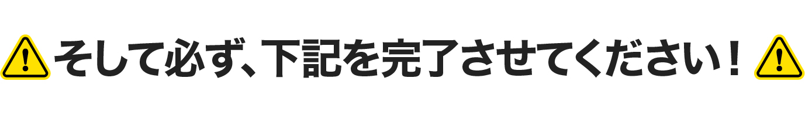
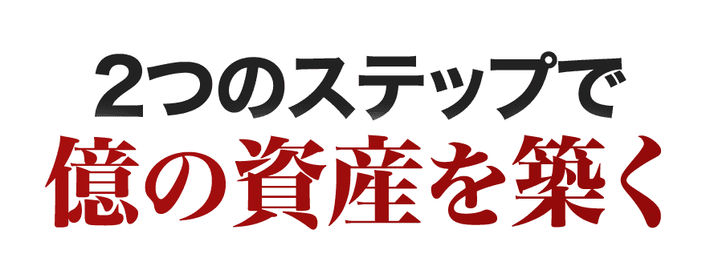
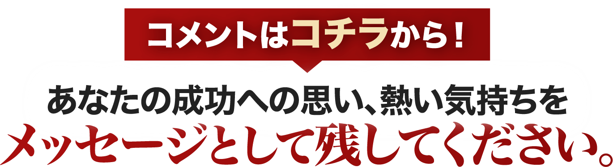

①あなたにメールが届いている確認のため藤井百七郎からのメールに、「確認しました」と返信してください。※迷惑メールフォルダも必ずチェックください。
メールでしかお届けできない、最重要な情報もこれからどんどん公開予定です。なので必ずメールが正しく届いているかご確認ください。
メールが確認できない方は、こちらのフォームから「メールが届いていません」とご連絡ください。
②必ずこのページをお気に入り（ブックマーク）に登録してください。
藤井百七郎です。
これからあなたにお届けするのは、
3年で「確実に」FIREを目指すための、
とっておきの方法。
それが、
「藤井流・3年FIRE投資塾」
というもの。
ここで1つ、
あなたに考えていただきたいことが
あります。
あなたがいまこの瞬間に、
1億円の資産を築き、
毎月100万円、200万円の安定収入が、
確保されていたとしたら・・・
どんな人生を過ごしたいと思いますか？
仕事を辞めて、
毎日のんびり過ごすのもいいでしょう。
あるいは海外に移住し、
ハワイとか、プーケットとか、
南の島でゆったりするのもいい。
もちろんお金の心配なく、
仕事に打ち込むのもいいと思います。
理想の過ごし方は人それぞれですし、
あなたは誰にも遠慮せず、
自分が心の底から「やりたい！」
と思うことを自由にできる。
あなたにはこれから、
FIREという世界を実現していただき、
お金の不安、心配から解放された、
本当の意味で自由な人生を、
手にして欲しいのです。
その方法は私が、
この藤井流「3年FIRE」投資塾で
お伝えします。
億り人になるため、FIREを実現するために、
難しいことをする必要はないんです。
あなたが投資の、
まったくの初心者であってもOK。
週末の30分を使って、
いまのお給料・収入をキープしながら、
できるだけリスクを避けて、
あなたは大きな資産をこれから、
築くことになりますよ。

上記の動画でも語っていますが、
あなたには2つのステップを辿って、
億の資産を築いていただきます。
そのイメージがこちら。
1つ目のステップは、
「トレードメイン」で資金を増やすという
やり方。
今の収入・生活をキープしながらトレードを通じて、
あなたは毎年600万円とか、1000万円とか、
1200万円といった副収入を作ることになります。
いったんトレードの収入だけで、
生活できる状態になる。
これを「サイドFIRE」と言います。
そして2つ目のステップは、
トレードから投資に移行し、
「お金がお金を生み出す」
という稼ぎ方で資産を増やします。
このステージにくれば、
あとは自動操縦みたいな感覚ですよ。
3000万円 → 5000万円 → 1億円と、
一気に資産を増やすことになるでしょう。
私の教え子の井上勇太さんは、
藤井流の稼ぎ方を学んでくださり、
1ヶ月で300万円、600万円、
1300万円超えなど大きな利益を、
文字通り「日常的に」
稼ぎ出しているんですよね。
そしてこうやって、
億の資産を築き「億り人」に
なられました。
別に彼が、
特別すごい成績、資産なわけではなく、
私のやり方を素直に実践してもらえたら、
このくらいの稼ぎ方は、誰にでも目指せます。
私がこの「3年FIRE」投資塾で、
あなたも成功できることを、
完璧な形で証明してみせますよ。
大いに期待していてください。
この1つ目の動画では、
あなたの成功へのロードマップや、
藤井流「3年FIRE」投資塾で、
どのように成功へと向かっていくのかを、
詳しくお話しました。
まずはこの第1弾の動画を、
何度か繰り返しじっくりと、
見ていただければと思います。
そうすることであなたも自然と、
成功するイメージが湧いてくるでしょう。
「なるほどこうやって億を作るのか」
「無理せず、コツコツやっても
FIREできるんだ」
「これなら自分にもやれそう！」
そうやってワクワクした気持ちになったら、
もう半分成功したも同然です。
ぜひ一緒に、
FIREの世界、億り人の世界へと、
ステップアップしていきましょう。
まあこの第1弾は、
挨拶代わりという感じですね笑
本格的な内容は、
2つ目の動画でお届けしようと思っています。
遅くとも2日後には、
そちらを公開できる予定です。
それまでに下記のコメント欄から、
必ずメッセージをお書きください。
次にお伝えする内容は、
正直にいうと、
「無料で公開すべきでない」
というのが本音です。
実際に私がスクールで、
お金を頂戴して教えている内容も、
盛り込まれていますからね。
なので「本気の方」にしか、
お届けしたくありません。
あなたがどれだけ強く、
藤井流の稼ぎ方を知りたいと思ってくれているのか。
そして「絶対に資産を作りたい！」
「何がなんでもFIREしたい！」
と、熱いパッションをもっているのか。
その思いをぜひ、
コメント欄にお書きください。

コメントする 反映に時間がかかります
ユリ
FIREする為には、簡単な事ではないような気もします。
冷静に判断するとか、精神面が強くないと思ってます。
たしかに、生半可な気持ちでは出来ないと感じます。
でも、出来るなら人生が変わっていくことが楽しくなりそうです。
藤井百七郎
ユリさん
FIREは大きな挑戦ですが、貴殿の意志と覚悟は素晴らしいです。精神面を鍛えながら、共に成長しましょう。夢への道は一歩ずつ。
FIRE
贅沢をしたいわけではなく、お金のことを気にして動けない人生から脱却したい！
藤井百七郎
ＦＩＲＥさん
お金の不安に囚われず、自由な人生を歩みたいという貴殿の決意を尊重します。投資を通じて、貴殿の希望に向かって一緒に進みましょう。
たか
請求書に追われる生活から抜け出したい！
藤井百七郎
たかさん
貴殿の願いを理解します。投資を通じて貴殿の経済的自立を支援し、新たな未来への道を切り拓きましょう。
shimi
少しずつコツコツ頑張って3年で
サイドＦＩＲＥしたいです
この先の人生を豊かにしたいです
藤井百七郎
shimiさん
貴殿の目標に向かって一緒に歩みましょう。コツコツと努力し、3年後にはサイドＦＩＲＥを実現し、人生を豊かにしましょう。貴殿の成長をサポートします。
mirai
毎月支払いに追われ、頭を悩ましている生活から抜け出したい。心もお金もゆとりを持ちたい
藤井百七郎
miraiさん
貴殿の願いを理解します。投資を通じて、経済的自立と精神的な安定を手に入れましょう。貴殿の成長をサポートします。
みっちゃん
藤井さま
全くの素人で、家庭の主婦、しかも80歳です。夫婦で年金暮らしです。僅かな貯えを取り崩しながら、先の不安に半分、目をつぶって暮らしています。多くは望みませんが、頭が正常に働くあいだに、少しは貯えを増やせて、人生の最後を楽しみ、穏やかに終われる資金があればと、切実に願います。
ただ、投資など、とても怖い世界のようで、素人の自分が覗く世界では無いような気もいたします。
100万円くらいが、自分が(夫に内緒で)動かせる資金です。お力をお借りできれば幸いです。
藤井百七郎
みっちゃんさん
80歳の貴殿の決意に感銘を受けます。安全で確実な投資方法を一緒に学びましょう。希望を持ち、資金を増やし、豊かな人生を過ごす手助けをします。
みっちゃん
有難うございます。まだ始まっていないのに、どきどきしています。
kei
是非やりたいです。
藤井百七郎
keiさん
素晴らしい決断です。一緒に目標を達成しましょう。貴殿の成長をサポートします。
よっちゃん
fireして心も体も余裕になる生活をしたいです。
藤井百七郎
よっちゃんさん
目標は素晴らしいです。焦らず、計画を着実に進めましょう。安定した投資法を学び、一歩ずつ前進しましょう。
belle
FIREする
理想ですが、具体的な目標としては難しいだろうと思っていました。
まだ詳細についてはこれから学んでいく為、半信半疑ではありますが…一攫千金ではなく地に足をつけた地道な作業との事ですので
本当に一歩ずつ積み重ねていく事で夢に近づくのであればとても嬉しいです。
本気で学んで生かしたいと思いますのでどうぞよろしくお願いいたします。
藤井百七郎
belleさん
素晴らしい目標です。地道な努力が成功への鍵です。一歩ずつ、着実に前進しましょう。私も全力でサポートします。
あさやん
あさやん
二回目の発信です
私は今回 最後まで取り組む覚悟を持って取り組みたいと考えてます
現在 やればやる程マイナスになって
自己嫌悪になってました
諦めかけてましたが 今回拝聴した内容に 感銘受けました
ついて行きたい
宜しくお願いします
藤井百七郎
あさやんさん
素晴らしい決断です。諦めずに前進する姿勢が大切です。貴殿の意欲に感銘し、全力でサポートいたします。一緒に成長し、希望に満ちた未来を切り拓きましょう。
さっちん
今まで、何人かの投資家を登録しましたが、いつも、胡散臭さを感じて、途中で投げ出していました。
藤井先生は、バレエダンサーの経歴もあり（娘がクラッシックバレエ10年）、親しみを感じたので、第2話に興味を持った次第です。
藤井百七郎
さっちんさん
素敵なご経験をありがとうございます。胡散臭さは避けるべきです。3年FIRE投資塾では、信頼と親しみのある環境を提供します。貴殿の参加を歓迎します。
じゅん
『無理せず、コツコツ、安全で確実』という言葉に､信頼できると感じました。素直に実践したら私にも道が開けそうな気がしてきました。
藤井百七郎
じゅんさん
その言葉を大切にします。私たちは一緒に、安全で着実な方法で成長します。一歩ずつ、貴殿の目標に向かって進みましょう。
JIN
ゆとりのある人生をおkる為、絶対FIREしたいです。
藤井百七郎
JINさん
FIREを目指す姿勢に感銘します。一緒に学び、計画を立てて夢を実現しましょう。貴殿のゆとりある人生の実現を全力でサポートします。
やこちゃん
初心者ですが、真剣に学びたいと思います。
藤井百七郎
やこちゃんさん
初心者であることは問題ありません。真剣な姿勢が大切です。丁寧に指導し、一緒に成長しましょう。貴殿の学びの旅を全力でサポートします。
はせ
保護動物活動をするのが夢です。一軒家を購入できる資金を稼ぎたいです。
藤井百七郎
はせさん
素晴らしい夢です。株式投資を通じて貴殿の資金を増やすお手伝いをします。3年FIRE投資塾で一緒に成長しましょう。
小柳 小三郎
確信を持ったお話振りに、引き込まれました。長年株式投資をやり、10数社の投資顧問会社を利用して参りました。結果は、損する為に、顧問料を払ったケースが多かったです。昨年3月10日に30万円振り込み、3月末にはもう、ほぼ息の根を止められました。ヤーマン、メタバースのＩPO銘柄等を、勧められました。しかし、全ては自己責任です。買いたい銘柄を思う様に買え無くなり、低位株をささやかに売買しております。明日は、生成AI関連銘柄の中で、等思ったり、さくらインターネットが分割して手が届く様に成らないか等と、思ったりしています。先生は、多分銘柄や材料に捕らわれない方式を編み出されたのではないかと、勝手に想像しております。配信有り難う御座いました。
藤井百七郎
小柳さん
貴殿の経験に感謝します。過去の損失は貴重な教訓です。私は銘柄や材料に捕らわれず、独自の投資手法を提案します。安定と成長を目指し、共に学びましょう。
Taku
正直、信じがたいという印象ですが、実質賃金が上がらない状況で定年も近いことから、何かしら所得を増やさないと将来がない
藤井百七郎
Takuさん
貴殿の懸念に共感します。株式投資を通じて収入を増やし、将来に備えましょう。3年FIRE投資塾で一緒に学び、希望を持ちましょう。
アッキー
今の生活から抜け出したいです
そして、嫁や今から生まれてくる子供達に不自由な生活をさせたくないので本気で学びたいです
よろしくお願い致します
藤井百七郎
アッキーさん
生活の向上と家族の未来のために、一緒に学びましょう。貴殿の意欲に感銘し、全力でサポートします。
JK
贅沢な暮らしをしたいのではありませんが毎日ヘトヘトになるまで仕事しても自分で使えるお金はほんの少しだけ。
お金の心配しなくて生活出来るようになりたいです。
藤井百七郎
JKさん
貴殿の目標を支援します。賢く投資し、将来への不安を解消しましょう。一緒に成長し、安定した未来を手に入れましょう。
TH
今まで、株のスクールにお金を払って受講して、初年度こそ勝ち越したけど３年ほど負け越してやめました。
FXも少額でずっと練習してみたけど、プラスになる気がせず、やめました。
自分で売買するトレードは、やめてしばらく経ちます。
藤井さんの動画をこのあとも拝聴して、改めてトライできるか、自分でもよくわかりませんが、楽しみではあります。
有料にならず、無料の範囲で、独り立ちできるくらいまでいくのでしょうか？
失礼ながら、半信半疑で、期待しすぎずに、楽しみにしています笑
藤井百七郎
THさん
貴殿の経験を尊重します。無料で基礎を学び、慎重にトライしてみてください。自信を持って進んでいけるようサポートします。
YH
お金に縛られている人生から早く脱却し、早く自由な人生になりたいです。
藤井百七郎
YHさん
貴殿の願いを叶えるため、私はここにいます。一緒に学び、成長し、自由な人生を手に入れましょう。期待しています。
ノブ
物価上昇の今、会社の給料だけでは
厳しいと感じるようになりました。
今の状況を変えたいと思い、
藤井さんから投資について学びたい
と思いました。
藤井百七郎
ノブさん
貴殿の意思に共感します。投資は財政的な自立を目指す有力な手段です。3年ＦＩＲＥ投資塾で貴殿の目標を支援できることを願っています。
ひなたん
藤井先生、第1話ありがとうございます。
とても希望溢れる内容で良かったです!
3年でFIREになりたいです！
人生を変えたいです!
よろしくお願い致します
藤井百七郎
ひなたんさん
貴殿の熱意に感謝します。FIREへの道のりは挑戦的ですが、貴殿の情熱と意欲が成功への鍵です。一緒に成長し、目標達成に向けて努力しましょう。
azusa
借金を返済し
自由になりたいです
長い間返済に追われ
苦悩の日々から脱却したい
藤井百七郎
azusaさん
貴殿の願いを理解します。貴殿が自由を手に入れるための第一歩を踏み出すお手伝いをすることを喜んでいます。
マサキユウ
何年も負けつづけていますこの辺りで勝ちます様に祈ります、
藤井百七郎
マサキユウさん
貴殿の苦境を理解します。自己啓発と勉強を重ね、成功への道を切り開くことをサポートします。
かこちゃん
今 藁にも縋る思いです
入院していて働けず
お金はかかるし困っているます
何とか 入院費用の足しに
とおもってます
宜しくお願い致します
藤井百七郎
かこちゃんさん
貴殿の現状を心からお察しします。私たちの塾での学びが、将来の安定につながることを願っています。お手伝いできることがあれば、何でもお知らせください。
薫
自分のやりたい事がしたい
そのために何か始めないとといつも思っていたのでこの機会にと思いました。
藤井百七郎
薫さん
貴殿のやりたいことを実現するための第一歩として、3年ＦＩＲＥ投資塾で学ぶことをお勧めします。一緒に目標に向かって歩みましょう。
ノン
65歳 まだ借金返済していかなければなりません。苦しい状況から抜け出したいので、お金の心配から解き放たれたい
藤井百七郎
ノンさん
貴殿の状況を理解します。株式投資を通じて、将来への不安を軽減し、自由な人生を目指しましょう。一緒に取り組み、希望を実現しましょう。
コマリン
3年でFIRE。
とても魅力的な言葉です。
今、年金生活で余裕のない
生活です。
30万円から100万200万円を目指していきたいです。
是非、
藤井先生の講義を聴いて
自分も余裕のある暮らしを
手に入れたいです。
よろしくお願いします。
藤井百七郎
コマリンさん
貴殿の熱意に感銘を受けます。目標達成に向けて共に努力しましょう。3年ＦＩＲＥ投資塾と共に、希望に満ちた未来を築きましょう。
コジ
うつ病になり、お金に不安があります。決して贅沢をしたいわけではなく、奥さん子供にお金の心配をかけたくない。お金のことばかりを気にしてるを人生から脱却したい。
藤井百七郎
コジさん
貴殿のお気持ちを理解いたします。私たちの投資塾では、お金に対する不安を軽減し、将来に向けての安定を目指します。一緒に学びながら、貴殿の目標に向かって進んでいきましょう。安心して、希望に満ちた未来を手に入れるための第一歩を踏み出しましょう。
かぐや姫桔梗
私は今現在55歳で、24歳の時に姪を引き取り、独身でシングルマザーとなりました。
子育て期間は、足が悪く、免許も持たず、高卒ではないことから就活は大変で何回も生活保護を受けながら子育てをしました。
そして、娘が結婚し、一人となった時にご縁があり、私は初めての結婚を47歳でしました。
しかし、この時点で私にも主人にも借金があり、共働きで返していけると思っていましたが、結婚して半年で私は卵巣がんで1年間闘病生活をし、その後は、体力がなかなか戻らず、元々内蔵的に病気のデパートで、借金は減るどころか増えるばかりの中、９つ上の主人が60歳を迎え、収入が減る一方に。
そんな時に主人は昨年、知り合いからの紹介で引っ越しを伴う転職をしましたが、なかなかうまくいかず直ぐにクビになり、ハローワークで紹介された職場はブラックで辞めた直後に倒れて入院…収入が入らず、役所にてフードバンクのお世話になり、その後に再度ハローワークから紹介された職場は給料はさほど多くはないが主人に合う仕事を回してくれる、ご夫婦で経営される小さな会社で、退職年齢が定められていないので体が許す限り働けそうと言っています。
因みに、主人はトラックの運転手です。
主人は、来年から年金の受給が始まり、今年1年は特別年金で本来の年金の受給額の半分以下が入ります。
これを機に主人から年金の一部で増やしていって欲しいと言われ、色々な情報から新NISAを始めようかと思い、取り敢えず時間のかかるSBIと楽天の証券口座を開設したところで、こちらに出会いました。
私は今現在、田舎で車がないのと高卒出ないことが引っかかり就活がままならず、しかし、この4月から1年ぶりに市役所にてパート勤務が決まった所ですが、借金を返済するには厳しい状況です。
まずは、収入を増やしながら、借金を完済して、そして、豊かに暮らせる老後資金と孫に会いに行ったり、孫へのプレゼントを買ってあげられるおばあちゃんになりたいです。
私は５人姉妹の長女として育ち、姪を育てたシングルマザー時代、そして、医療費と借金返済と生活に追われる結婚生活。
老後は主人と2人、お金に困らない豊かな余生を送りたいと思っています。
藤井百七郎
かぐや姫桔梗さん
貴殿の人生の困難さに深く感動しました。貴殿の強さと決意は立派です。まずは、安定した収入源を確保し、借金を減らすことが重要です。投資は将来に向けた一歩ですが、慎重に進めることが大切です。貴殿の目標に向かって、私たちも全力でサポートします。
小柳 小三郎
配信有り難う御座います。是迄多くの投資顧問会社を利用しました。ほとんどは損をする為に、顧問料を払う事になってしまう有り様でした。１年位前にスカンピンと相なり、買いたい銘柄が有っても、購入出来ない現状です。藤井先生の編み出された技の一端を、参考にさせて戴けたら
、戦前生まれの枯れ木に花が咲くという奇跡が起きるかもしれません。宜しくお願い致します。
藤井百七郎
小柳さん
貴殿の経験を踏まえ、私の指導が有益であることを願います。損失を回避し、収益を増やすための戦略を共に学びましょう。枯れ木にも花が咲くという奇跡を目指し、一歩ずつ前進しましょう。
Hide
こんにちは
動画を視聴させて頂きました。
にわかには信じ難い位のペースお金が増えるのには驚きました。
誰でも出来るとは思えないのですが
出資金が多くないとこれだけの金額にはならないのでしょうね。
とにかく投資素人の私には夢の様なハードルが高そうな動画です。
藤井百七郎
Hideさん
動画をご覧いただき、感想をありがとうございます。投資は時間と経験が必要ですが、段階的に学んでいけば理解できるものです。貴殿のペースで進めましょう。
JK
ファイヤーしたいです。
藤井百七郎
JKさん
貴殿の目標をサポートします。ファイヤーへの道は長く、慎重に計画し、着実に進めましょう。貴殿の希望を実現するために、私たちが手助けします。
かぶとむし
仕事に子育てに介護とフルで忙しい私には「週末だけのトレード」でよいという所が刺さりました。昔昔チャート分析や日経新聞を読む等して勉強はしてましたが、今は実践する時間が取れない時間貧乏人間です。子に障害がある為、私が亡き後配当だけで生活できる資金を残すことを目指してます。（2億）さらに稼げたらそういう子達の施設を作ることを目的としてます（10億）
藤井百七郎
かぶとむしさん
貴殿の情熱と目標に感銘を受けました。週末トレードは有益な選択です。目標達成に向けて、焦らずに着実に進みましょう。貴殿のお子様と地域社会のために素晴らしい未来を築くことができます。応援しています。
Ben
初心者ですが、株を始めてみましたが、実際どうすれば良いのかわかりません。でも藤井先生の動画を見て頑張れそうです。よろしくお願いします。
藤井百七郎
Benさん
初心者の方でも安心してください。誰もが皆、初めは未知の世界でした。3年ＦＩＲＥ投資塾で、一歩ずつ学び、成長していきましょう。質問や不明点があればいつでも気軽に相談してください。成功への道のりを共に歩みましょう。